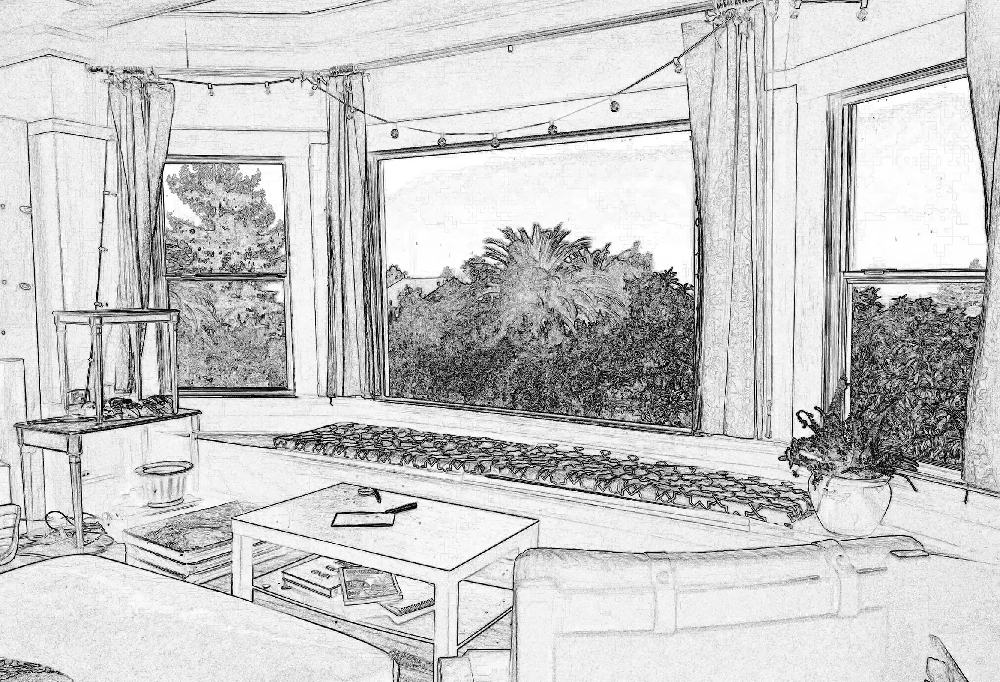

Parallax
Parallax is an effect where the background content or image in this case, is moved at a different speed than the foreground content while scrolling.

Parallax is an effect where the background content or image in this case, is moved at a different speed than the foreground content while scrolling.